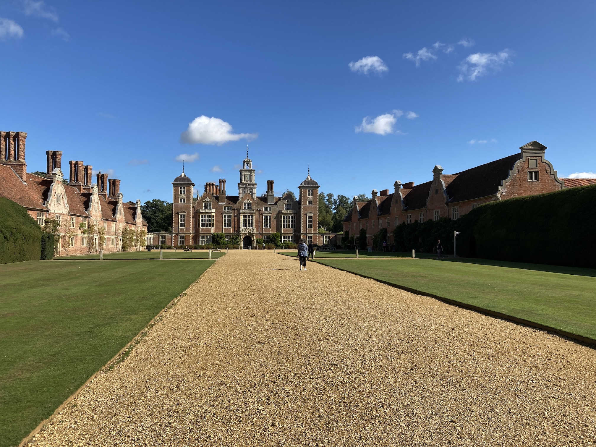
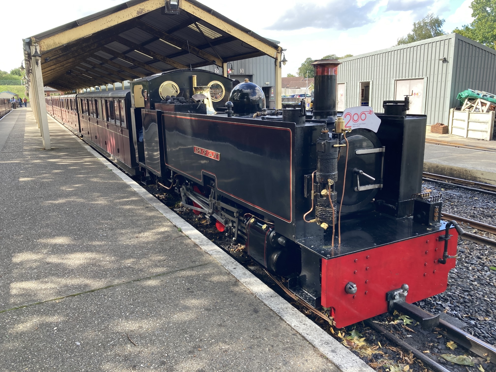
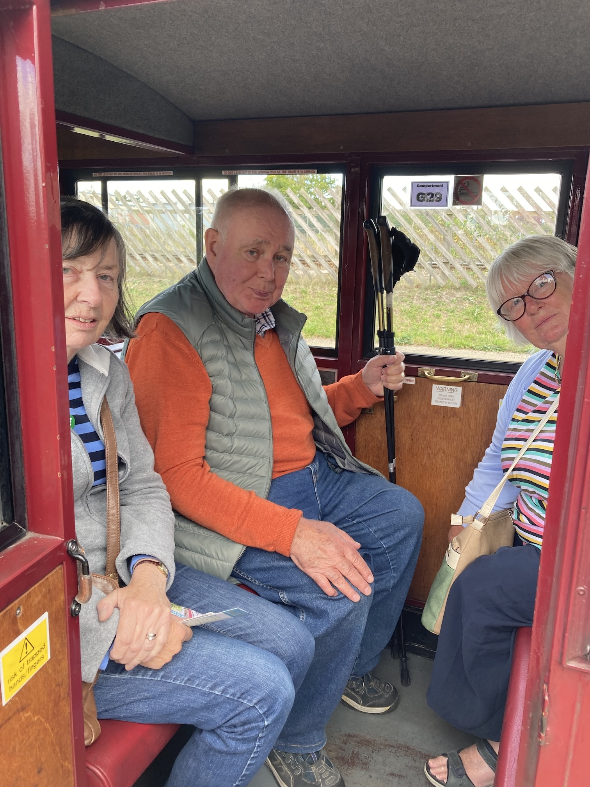
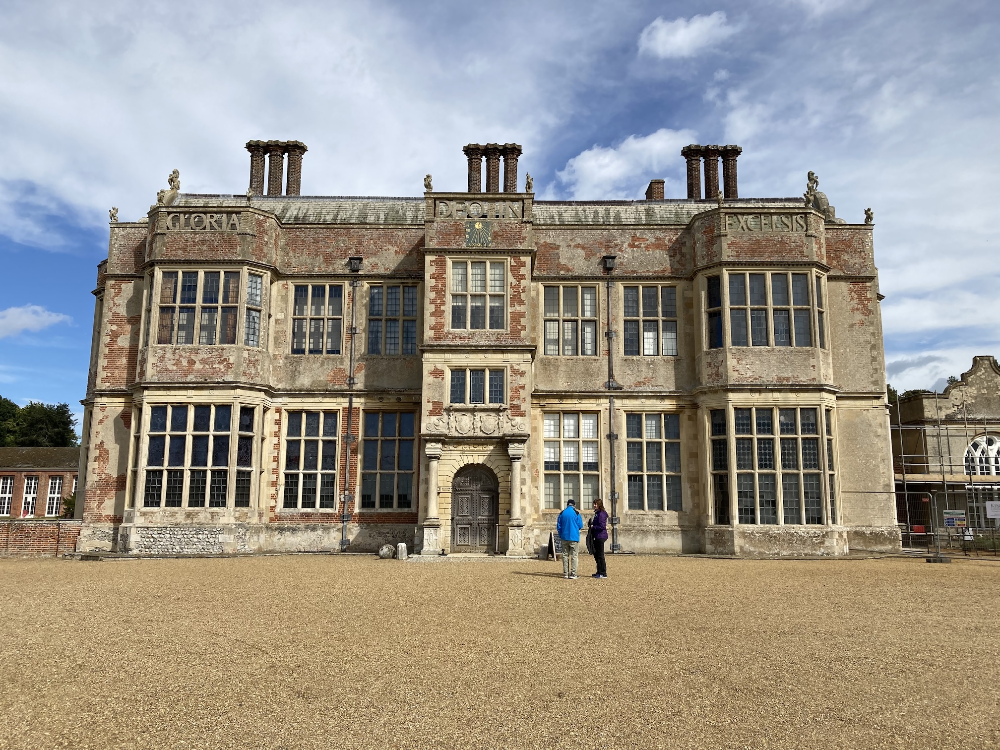
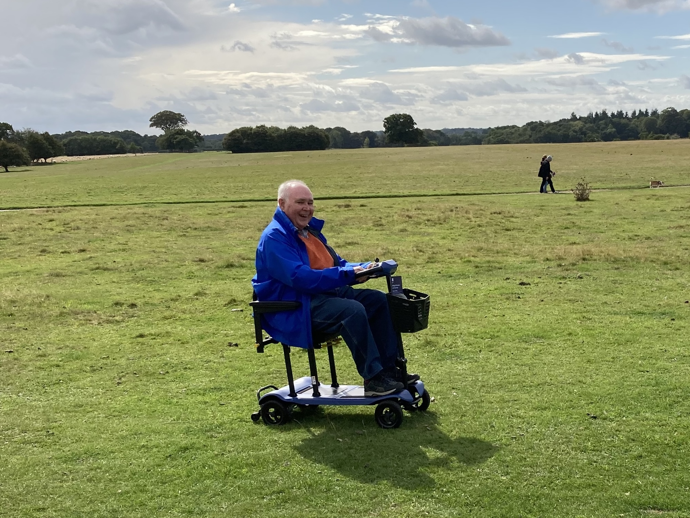
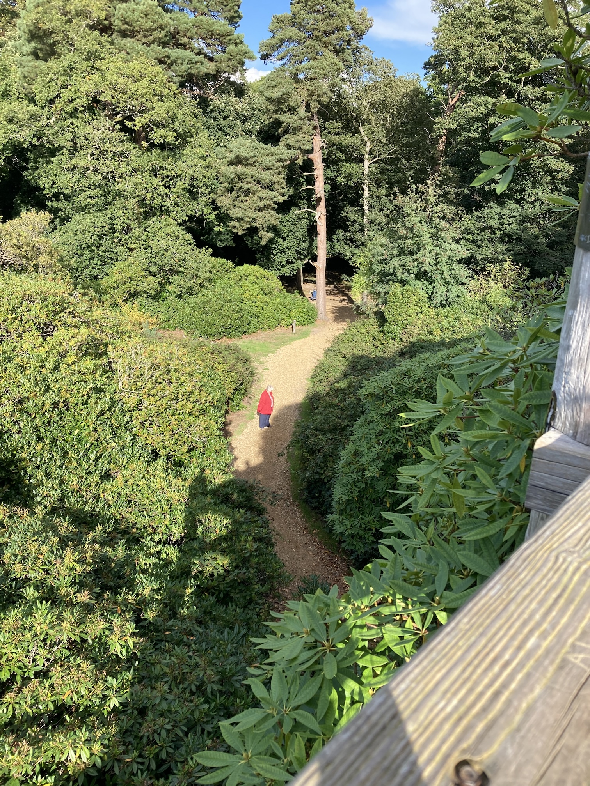
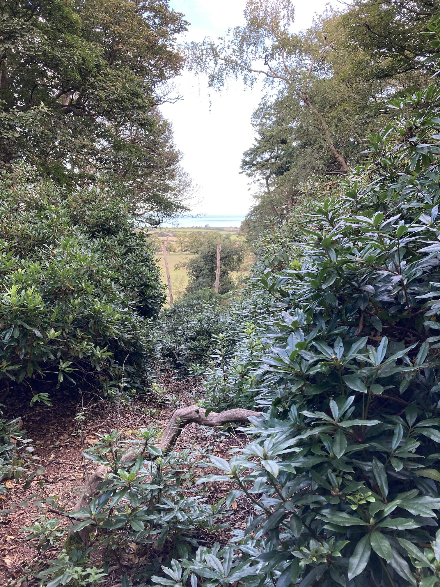

For the past few years we have met our friends, Kate and Dick, somewhere between where we each live. This year it was north Norfolk. We had the longer journey, five and a half hours including a lunch stop, whereas their's wa two and half hours. But due to Dick's Parkinsons their tavel is a little more difficult.
So we set of at 9:30 on Thursday 11th September in the rain, heading for Holt in Norfolk. Luckily the rain stopped as we entered Kent on the M25, although we had a few spots near Thakenham.
We stopped at the half-way point (in miles) at Hatfield Forest (this is a photo of the lake) for some lunch and then arrived at the B&B just after three. Kate and Dick arrived half an hour later, complete with a bottle of Proseco! After a long chat we went off to look at Holt and then to a pub where Kate had booked a table. However, a number of dishes were off the menu, which was smaller than the one online. This upset Kate and so we went to another pub, just along the road in Holt, and had quite a good, but ordinary meal.
Friday morning started by Kate driving us to Blickling Hall, a National Trust estate 20 minutes from where we are staying. Kate had intended that we join a group for an outline of the house and estate, but, not only would we have been too late, it was not being run that day. So Kate and Dick toured the grounds, including the walled garden and we went into the house. We had arranged that I would call Kate when we came out, but there was no signal! Luckily we saw Dick, on his scooter, drive past a hole in the wall of the walled garden.
After coffee and a scone we went on to the Bure Valley Railway, a narrow gauge railway, run by enthusiasts for the nine miles from Aylsham to Wroxam. It runs on a 15-inch gauge track, built on the disused trackbed of the former East Norfolk Railway, which originally opened in 1880 and closed in 1982. We were in time for the last train of the day from Aylsham to Wroxham, some nine miles, taking around 45 minutes.
The first photo was taken at Aylsham after the locomotive, the John of Gaunt, was turned around and backed on to the carraiges. The remaining photos and the video clips were taken at Wroxham, just before we caught the last train back to Aylsham.
It was a good day out. Later we went to the Red Hart pub for dinner, about five minutes drive from our B&B.
On Saturday we had a slightly later start, since the house at the NT property we were visiting (Felbrigg Hall) didn't open until midday. So we looked at photos over breakfast and then set off. Felbrigg Hall was re-built by Sir John Wyndham and his son in 1620 and was full of items brought back by William Windham II from his 'grand tour' of Europe. When we got there Kate and Dick went off to the walled garden, while we went round the house. We then met up and spent a while in the cafe. It just started to rain as we approached the car and then rained very heavily.
From Felbrigg we went on to another NT property, Sheringham Park. It was just that, a park. Luckily it had stopped raining by then and so Dick was able to drive his scooter along a made-up path and so we walked through the woods for a while.
 Then we went on (in the rain) to Blakely, where Kate had booked a table in a restaurant. We waited for the rain to stop and then had a good meal before heading back to the B&B.
On Sunday 14th September we left the B&B at Holt just after ten, saying goodbye to Kate and Dick, who were still having their breakfast. We followed the same route that we had taken on Thursday, but in reverse and again planned to stop at Hatfield Forest for some cake. Although we did stop there it took a little longer than expected, since I missed the turn off the M11 and we had to make a bit of a detour.
We finally arrived home, in the rain, at four o'clock.
| Return to Trips | © David James 2025 Last updated: 19th September 2025 |